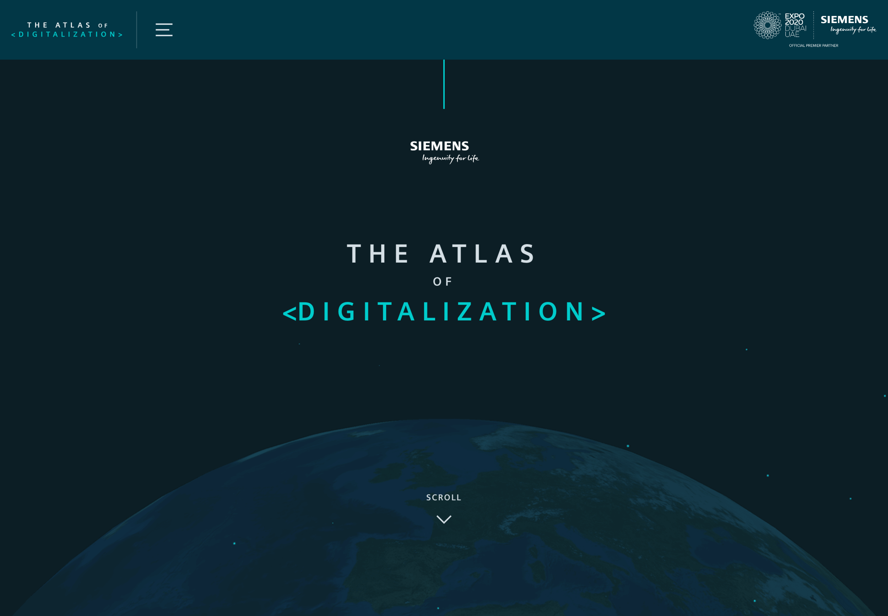
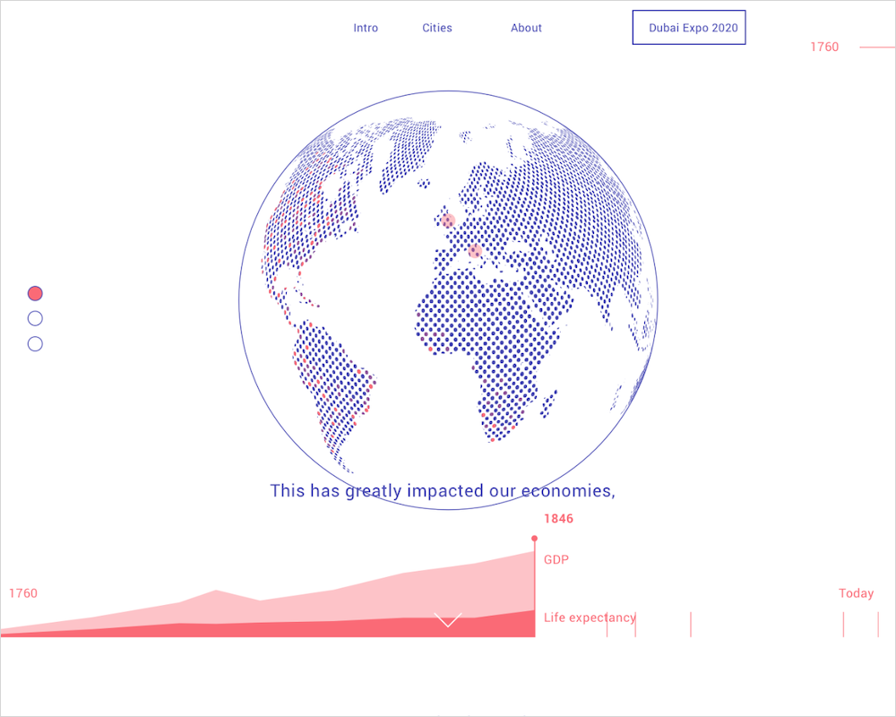
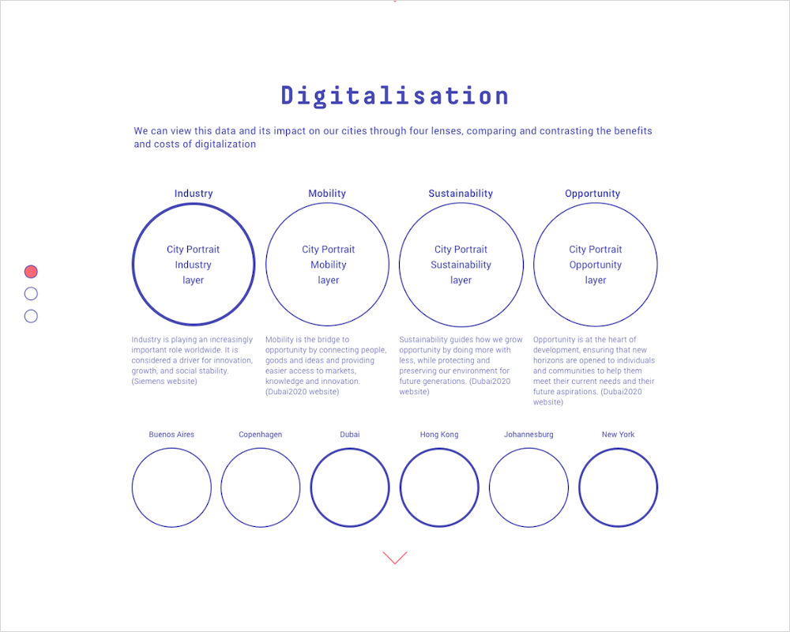
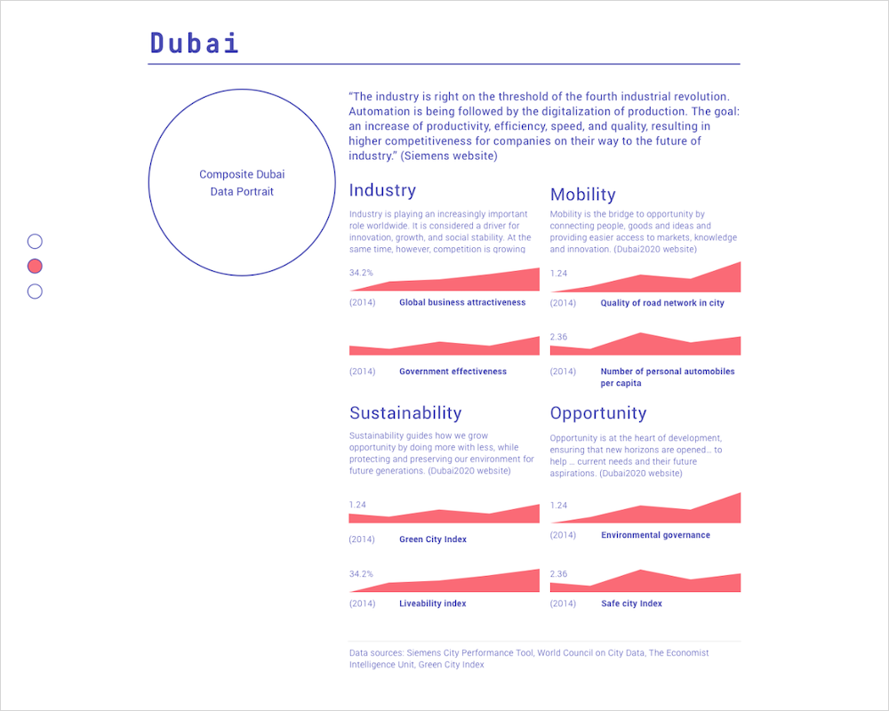
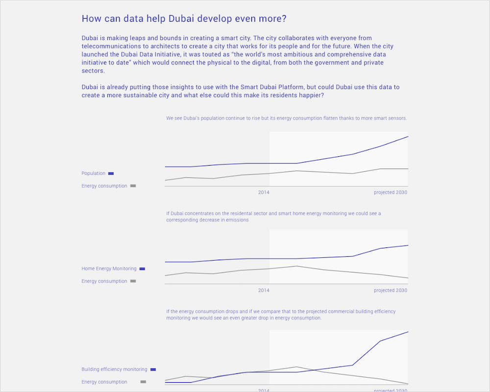
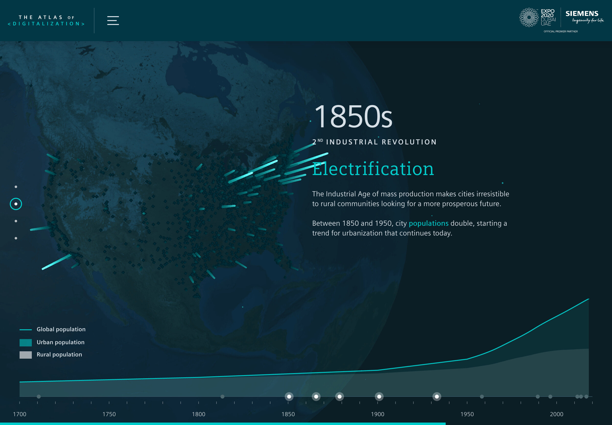
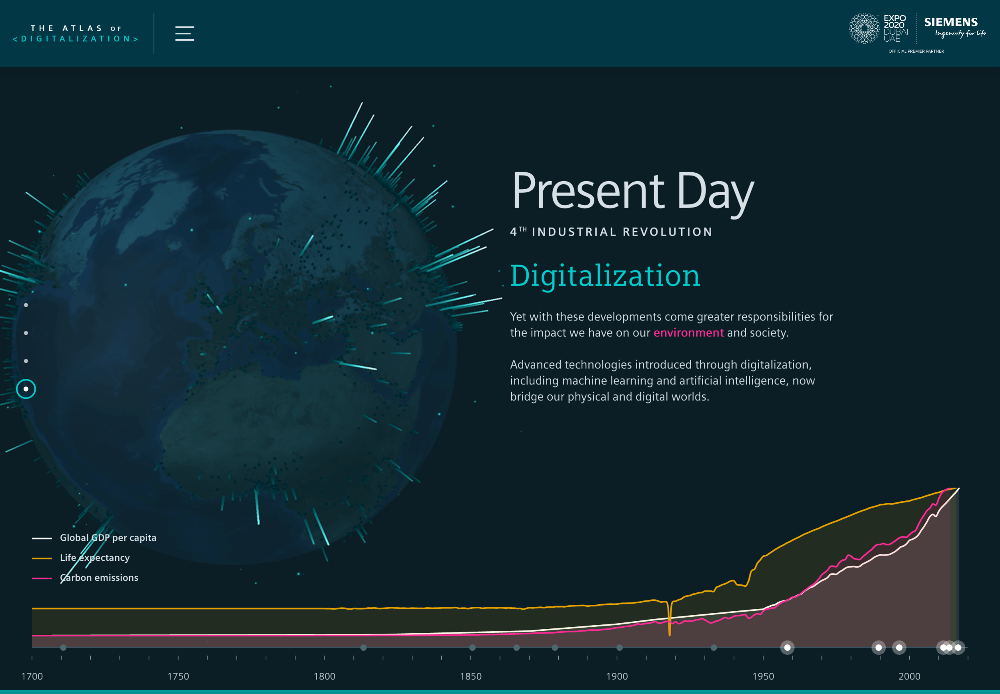
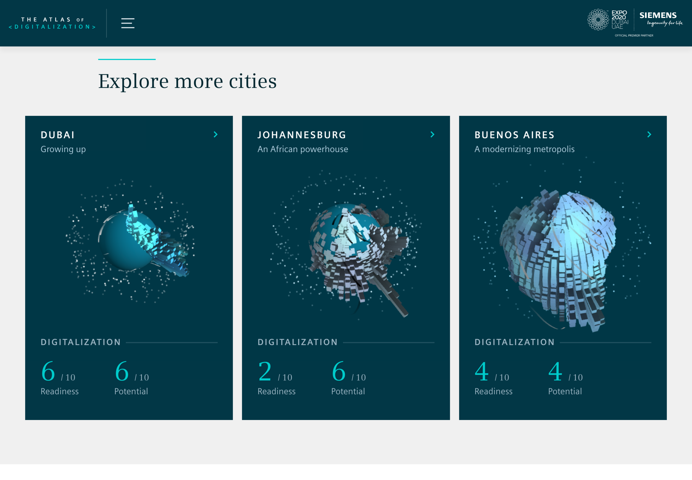
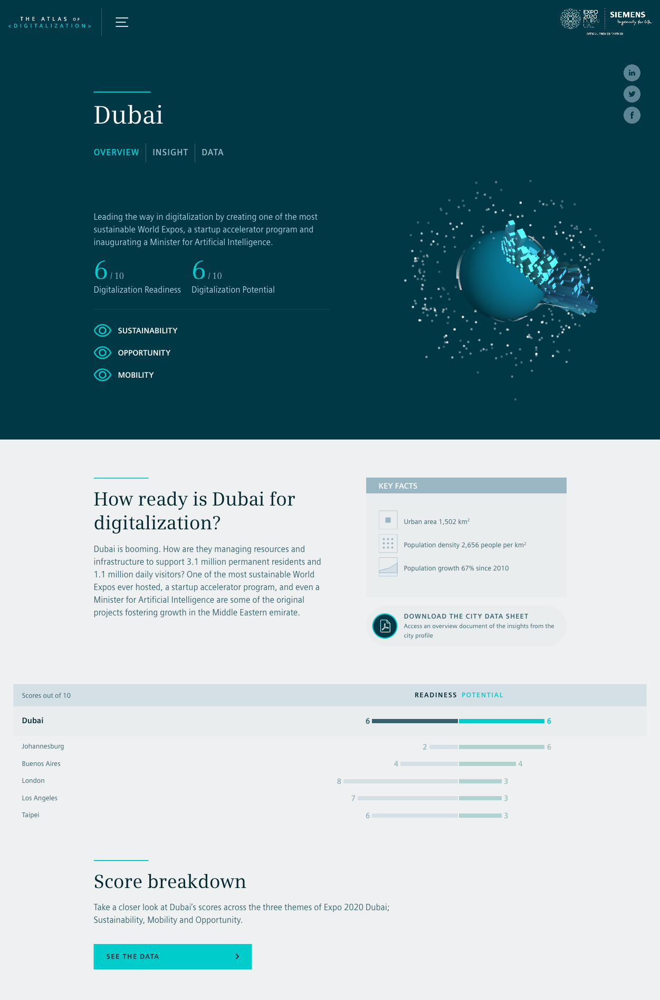

Siemens

For Signal-Noise (part of the The Economist Group) I worked on the user experience, data and storytelling of the Atlas of Digitalization, a visualisation for Siemens for The Dubai WorldExpo exploring the effects and impacts of technology on our urban lives and how to make smart cities better.




Tomás Louro designed the final UI.



